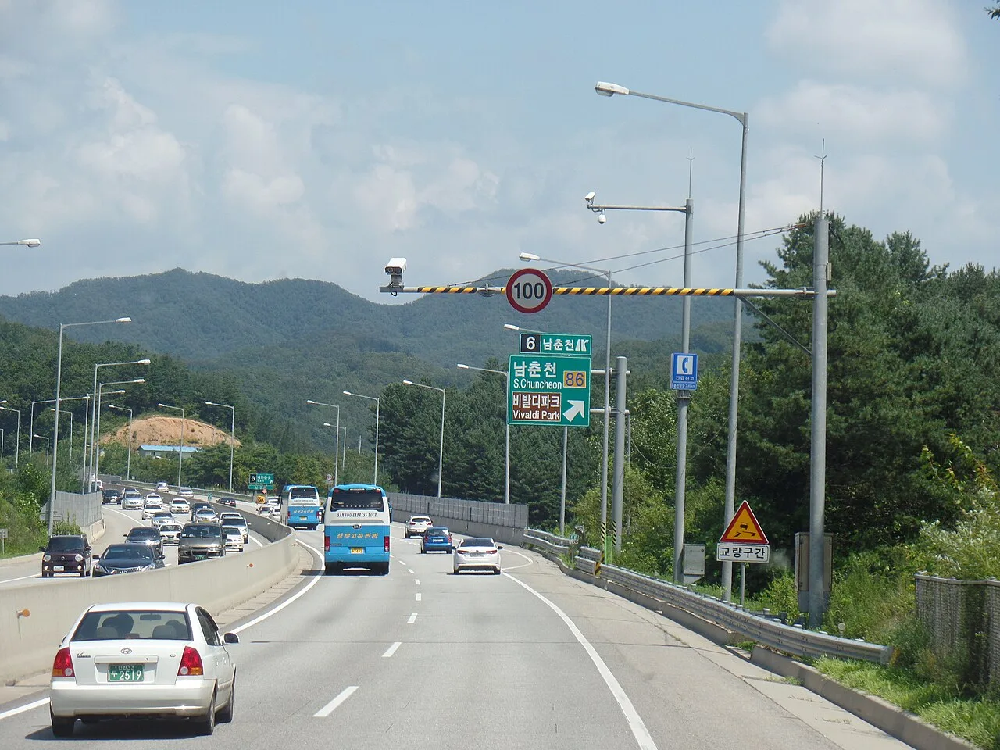

▲ 제한속도는 어떻게 정해지는가. 이 질문이 이번 보고서의 출발점이다
제한속도를 지키는 사람이 소수라면, 문제는 사람일까요 기준일까요.
AAA 교통안전재단이 이 질문을 정면으로 다룬 보고서를 냈습니다.
운전자 1만6,000명 중 65%가 "상황에 따라 제한속도를 넘길 수 있다"고 답했습니다. 규칙을 그대로 지킨다는 응답은 35%였습니다.
1. 85퍼센타일이라는 기준
미국의 제한속도는 임의로 정해지지 않습니다. 도로 계획 실무에서는 85퍼센타일 속도를 기준으로 삼는 것이 표준 관행입니다.
📍 85퍼센타일이란
교통 흐름이 자유로운 상태에서 실제 주행 속도를 측정한 뒤, 85%의 차량이 그 이하로 달리는 속도를 찾아 제한속도로 삼는 방식입니다. 전제는 이렇습니다. 대다수 운전자는 그 도로에서 안전하다고 느끼는 속도를 스스로 선택한다는 것입니다. 즉 규제가 속도를 정하는 게 아니라, 실제 주행 행태가 규제를 정합니다.
이 방식에는 순환 구조가 있습니다. 사람들이 빨리 달리면 제한속도가 올라가고, 제한속도가 올라가면 다시 더 빨리 달립니다. 보고서가 문제를 제기한 지점도 여기입니다.
2. 표지판과 실제의 간격
보고서는 구체적인 사례를 듭니다. 시속 70마일로 표시된 디트로이트의 고속도로에서 실제 통행 속도는 80마일이 일반적이라는 것입니다.
여기서 딜레마가 생깁니다. 표지판을 실제에 맞춰 올릴 것인가, 아니면 실제를 표지판에 맞춰 내릴 것인가.

▲ 표지판의 숫자와 실제 통행 속도가 벌어지면 규제의 신뢰도가 흔들린다 ⓒ Wikimedia Commons
| 올리자는 쪽 | 내리자는 쪽 |
|---|---|
| 안 지키는 규칙은 규칙의 권위를 떨어뜨린다 | 속도가 오르면 충돌 에너지가 급증한다 |
| 속도 편차가 사고를 만든다 — 흐름을 맞춰야 한다 | 보행자·이륜차 등 취약 이용자가 위험해진다 |
| 단속이 세수 목적으로 비친다 | 제한속도를 올리면 실제 속도는 더 올라간다 |

▲ 운전자들은 "차가 없을 때, 장거리일 때, 익숙한 도로일 때" 속도를 넘긴다고 답했다 ⓒ Wikimedia Commons
3. 운전자들은 어떻게 생각하나
| 구분 | 비율 |
|---|---|
| 제한속도 초과를 어느 정도 수용 | 65% |
| 규칙을 지킨다 | 35% |
| 그중 엄격 준수층 | 21% |
흥미로운 것은 초과를 정당화하는 조건입니다. 운전자들은 "차가 없을 때", "장거리를 갈 때", "아주 익숙한 도로일 때" 속도를 넘기는 경향을 보였습니다.
세 조건 모두 '내가 판단하기에 안전한 상황'입니다. 즉 사람들은 규칙을 무시한다기보다, 규칙보다 자기 판단을 앞세웁니다.
📍 "익숙한 도로"가 특히 위험한 이유
익숙함은 위험 인지를 둔하게 만듭니다. 매일 지나는 길에서는 주의 자원을 덜 쓰게 되고, 그만큼 예상 밖의 상황에 대응이 늦습니다. 실제로 교통사고의 상당수가 집 근처에서 일어난다는 통계는 여러 나라에서 반복 확인됩니다.
21%의 엄격 준수층은 결이 다릅니다. 이들은 안전 운전을 "좋은 사람이 되는 일의 일부"로 인식한다고 답했습니다. 규칙을 효율의 문제가 아니라 윤리의 문제로 본다는 뜻입니다.
4. 보고서가 던진 제안
보고서는 85퍼센타일 대신 90퍼센타일을 적용하는 방안을 언급했습니다. 다만 그 효과를 뒷받침하는 비교 데이터는 함께 제시되지 않았습니다.
이 점은 읽을 때 감안해야 합니다. 이번 보고서의 무게중심은 운전자 인식 조사에 있습니다. 제한속도를 올렸을 때 사고율이 어떻게 변하는지에 대한 정량 분석은 담기지 않았습니다.

▲ 한국은 실제 주행 속도가 아니라 도로 구조와 설계속도를 기준으로 삼는다 ⓒ Wikimedia Commons
5. 한국은 어떻게 정하나
한국의 제한속도는 도로 등급과 구조를 기준으로 설정됩니다. 도로의 설계속도, 차로 수, 보행자 접근성, 주변 환경 등을 종합해 정하는 방식입니다.
85퍼센타일처럼 실제 주행 속도를 그대로 반영하는 구조는 아닙니다. 그래서 미국식 논쟁과는 결이 다릅니다.
| 구분 | 미국(관행) | 한국 |
|---|---|---|
| 기준 | 실제 주행 속도(85퍼센타일) | 도로 구조·설계속도 |
| 성격 | 행태를 반영 | 행태를 규정 |
| 논쟁 지점 | 기준이 너무 낮은가 | 구간별 일관성과 체감 |
다만 공통점은 있습니다. 표지판의 숫자와 실제 통행 속도가 벌어질수록 규제의 신뢰도가 떨어진다는 것입니다. 이 문제는 어느 나라에서든 같습니다.
6. 정리
AAA 교통안전재단이 운전자 1만6,000명을 조사한 196페이지 보고서를 냈습니다. 65%가 제한속도 초과를 어느 정도 수용한다고 답했고, 지킨다는 응답은 35%였습니다.
미국 제한속도는 통상 85퍼센타일 원칙으로 정해집니다. 실제 주행 속도가 규제를 정하는 구조라, 사람들이 빨리 달리면 기준도 따라 올라갑니다.
다만 보고서에는 제한속도 상향의 안전 영향에 대한 정량 데이터가 담기지 않았습니다. "제한속도가 낮다"는 결론이 아니라 "운전자들은 이렇게 생각한다"는 조사로 읽는 편이 정확합니다.